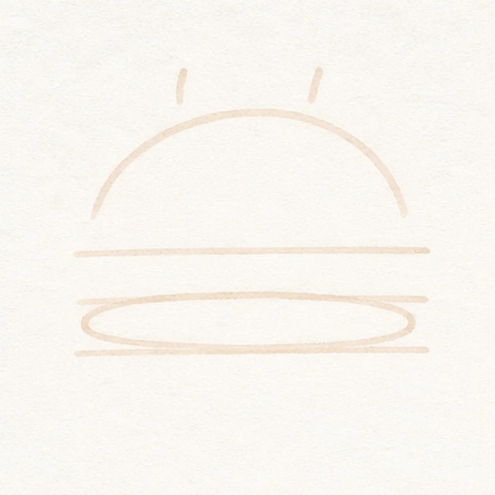
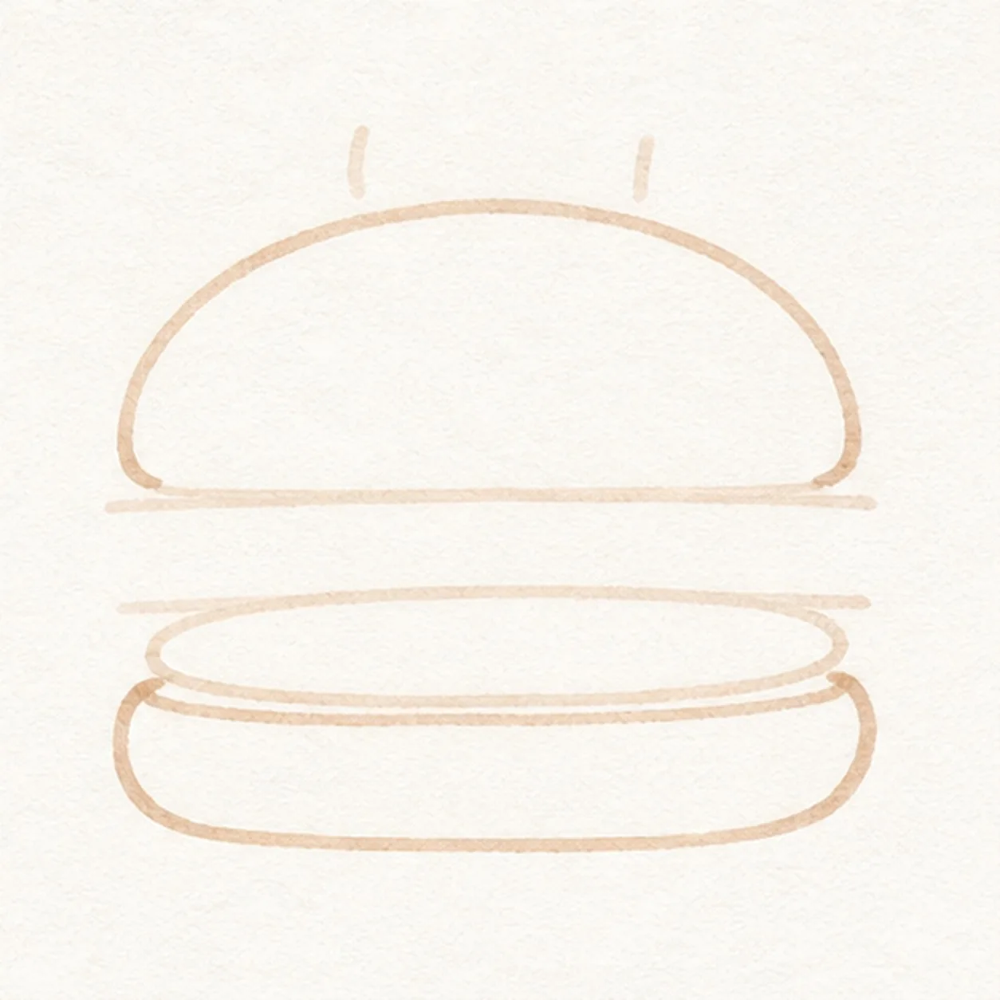
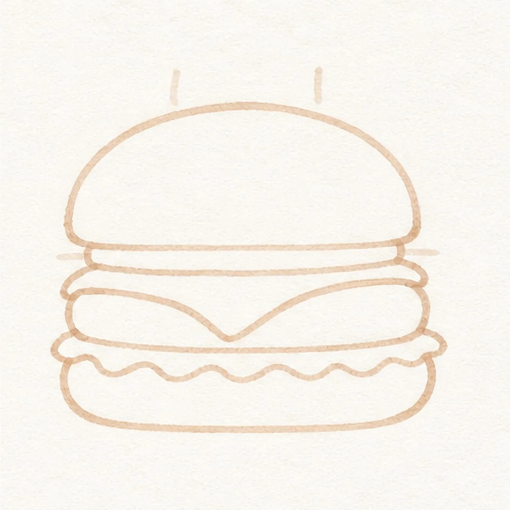
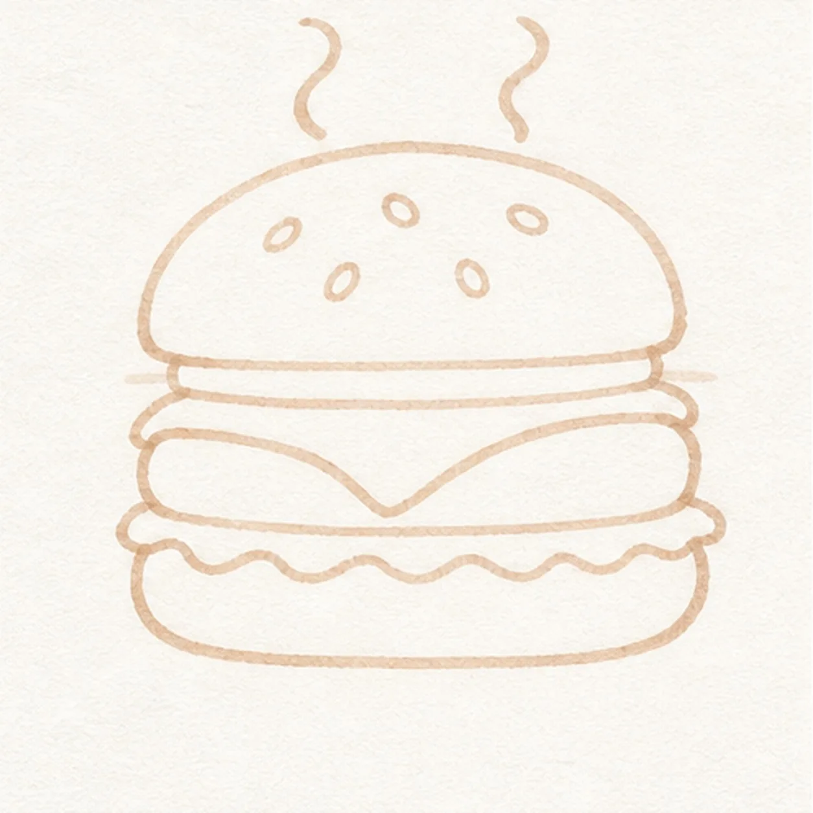
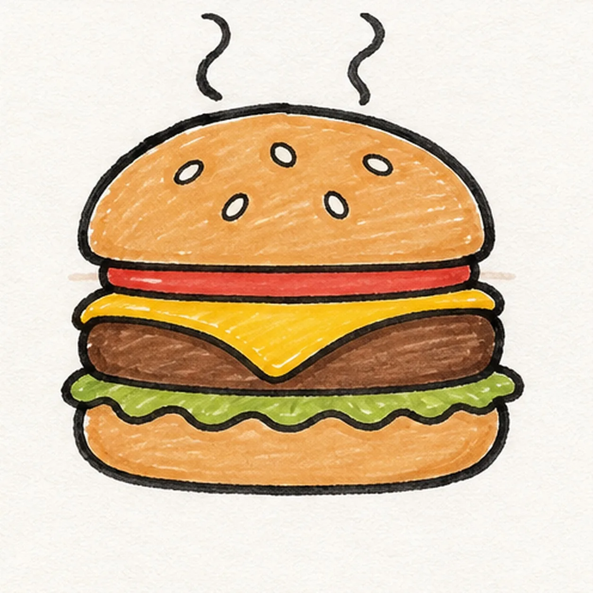

Felt-tip marker mode
Let's draw a cartoon hamburger with steam
Treat this as one playful practice round: sketch the idea loosely, simplify the shapes, then commit with confident marker outlines and bright fills.
-
01

Stack the simple guides
Place a dome arc, two bun guides, a patty oval, and two tiny steam ticks.
Marker tip: Keep the first frame loose and under two minutes.
-
02

Round out the buns
Connect the top and lower bun contours over the guides.
Marker tip: Ghost each long curve before committing.
-
03

Layer the fillings
Add one patty, one draped cheese slice, one wavy lettuce strip, and a narrow tomato accent.
Marker tip: Keep each layer centered in the same stack.
-
04

Sprinkle seeds and steam
Add exactly six sesame seeds and turn the two ticks into two steam curls.
Marker tip: Count both groups before you move on.
-
05

Ink and map every flavor
Ink established contours and map tan, brown, yellow, green, and red in every planned region.
Marker tip: Pull strokes with each form instead of scrubbing the fill.
-
06

Serve the marker burger
Complete only established fills, strengthen selected contours, and add the small existing highlight and shadow accents.
Marker tip: Stop after checking six seeds and two steam curls.